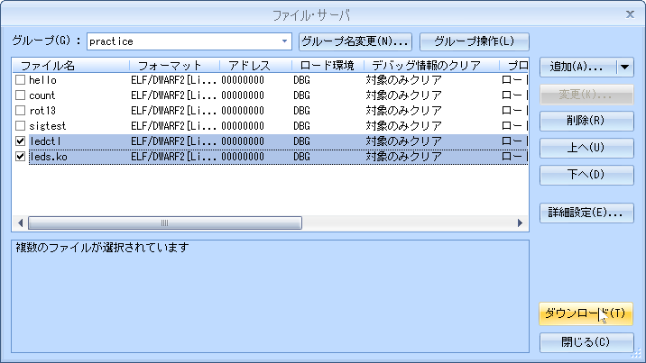
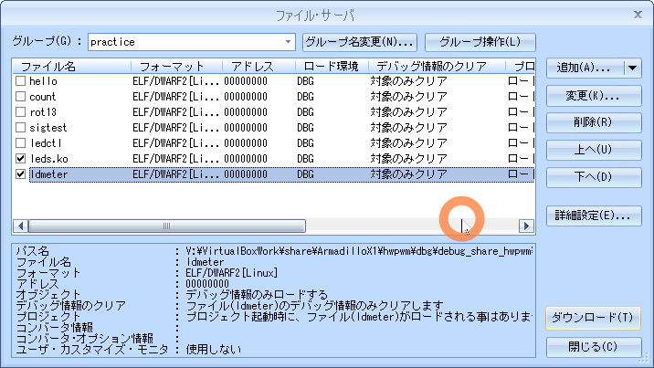

02.led
目的
組込みアプリケーション開発 02.led
構成データ
/media/sf_ArmadilloX1/hwpwm/work/R06_2024/Apllication_debug/text/practice ディレクトリ
･･･/share/ArmadilloX1/hwpwm/work/R06_2024/Application_debug/text/practice/ の構成
user@1204PC-Z490M:/mnt/v/VirtualBoxWork/share/ArmadilloX1/hwpwm/work/R06_2024/Application_debug/text/practice$ tree -aF -L 3
./
├── 02.led/
│ ├── drivers/
│ │ └── leds/
│ │ ├── leds.c* <───── ドライバソース
│ │ └── Makefile* <───── ドライバ用Makefile
│ ├── ldmeter.c* <───── 例題 デバイス制御用ソース
│ ├── ledctl.c* <───── 課題 デバイス制御用ソース
│ └── Makefile* <───── デバイス制御用Makefile
│
LED制御
デバイス仕様

デバイスファイル: "/sys/class/leds/led_ext/brightness"
| b7 | b6 | b5 | b4 | b3 | b2 | b1 | b0 |
|---|---|---|---|---|---|---|---|
| led8 | led7 | led6 | led5 | led4 | led3 | led2 | led1 |
デバイスファイルに 1～255 の値を書き込むことで点灯、0は消灯
デバイスドライバ
ソース
leds.c
02.led/drivers/leds.c
#include <linux/module.h>
#include <linux/kernel.h>
#include <linux/init.h>
#include <linux/platform_device.h>
#include <linux/io.h>
#include <linux/leds.h>
#include <linux/err.h>
#include <asm/armadilloX1-ext-cpld.h>
// デバイス書き込み関数(leds_set)
static void leds_set(struct led_classdev *led_cdev,
enum led_brightness brightness)
{
// LEDを光らせます。(cpld_write)
cpld_write(CPLD_WRITE_LED, brightness);
}
// LEDクラスデバイス構造体
static struct led_classdev leds = {
.name = "led_ext",
.brightness_set = leds_set,
.max_brightness = 255,
};
// probe関数(leds_probe)
static int leds_probe(struct platform_device *pdev)
{
// LED点灯状態レジスタを初期化します。(cpld_write)
cpld_write(CPLD_WRITE_LED, 0x00);
// LEDクラスデバイスを登録します。(led_classdev_register)
// ->/sys/class/leds/配下にファイルを作成し、/sys/class/leds/led_ext/brightnessに
// 値を書き込むとデバイス書き込み関数(leds_set)が呼び出されるように
// 登録します。
return led_classdev_register(NULL, &leds);
}
// remove関数(leds_remove)
static int leds_remove(struct platform_device *pdev)
{
// LEDクラスデバイスを解除します。(led_classdev_unregister)
led_classdev_unregister(&leds);
return 0;
}
// プラットフォームドライバ
static struct platform_driver leds_driver = {
.probe = leds_probe,
.remove = leds_remove,
.driver = {
.name = "armadillo-x1-extension-leds",
.owner = THIS_MODULE,
},
};
static struct platform_device *pdev;
// 初期化関数(leds_init)
static int __init leds_init(void)
{
int ret;
// プラットフォームデバイスを登録します。(platform_device_register_simple)
// ->プラットフォーム依存のデバイス情報を登録します。
pdev = platform_device_register_simple("armadillo-x1-extension-leds", -1, NULL, 0);
if (IS_ERR(pdev)) {
ret = (int)pdev;
goto err_ret;
}
// プラットフォームドライバを登録します。(platform_driver_register)
// ->登録したプラットフォームデバイスのリソース情報を取得し、
// プラットフォームドライバとして、probe関数とremove関数を登録します。
ret = platform_driver_register(&leds_driver);
if (ret < 0)
goto err_platform_device_unregister;
return 0;
err_platform_device_unregister:
platform_device_unregister(pdev);
err_ret:
return ret;
}
// 終了関数(leds_exit)
static void __exit leds_exit(void)
{
// プラットフォームドライバを解除します。(platform_driver_unregister)
platform_driver_unregister(&leds_driver);
// プラットフォームデバイスを解除します。(platform_device_unregister)
platform_device_unregister(pdev);
}
// 初期化の際に、初期化関数が呼ばれるように登録します。
module_init(leds_init);
// 終了する際に、終了関数が呼ばれるように登録します。
module_exit(leds_exit);
// MODULE_LICENSEは"GPL"とします。
MODULE_LICENSE("GPL");
Makefile
/media/sf_ArmadilloX1/hwpwm/work/R06_2024/Application_debug/text/practice-example/02.led/drivers/leds/Makefile
KERNELDIR = /home/atmark/linux-4.9-x1-at27_dbg
ARCH = arm
PREFIX = arm-linux-gnueabihf-
MOD_PATH = /work/linux/nfsroot
EXTRA_CFLAGS += -gdwarf-2 -O0
obj-m := leds.o
modules:
$(MAKE) -C $(KERNELDIR) M=`pwd` ARCH=$(ARCH) CROSS_COMPILE=$(PREFIX) modules
modules_install:
$(MAKE) -C $(KERNELDIR) M=`pwd` ARCH=$(ARCH) INSTALL_MOD_PATH=$(MOD_PATH) modules_install
myinstall:
cp -p *.ko /media/sf_ArmadilloX1/hwpwm/dbg/debug_share_hwpwm/R06_2024/04_practice
cp -p *.c /media/sf_ArmadilloX1/hwpwm/dbg/debug_share_hwpwm/R06_2024/04_practice
clean:
$(MAKE) -C $(KERNELDIR) M=`pwd` clean
動作確認
make clean
atmark@atde8:/media/sf_ArmadilloX1/hwpwm/work/R06_2024/Application_debug/text/practice-example/02.led/drivers/leds$ make clean
atmark@atde8:/media/sf_ArmadilloX1/hwpwm/work/R06_2024/Application_debug/text/practice-example/02.led/drivers/leds$ make clean
make -C /home/atmark/linux-4.9-x1-at27_dbg M=`pwd` clean
make[1]: ディレクトリ '/home/atmark/linux-4.9-x1-at27_dbg' に入ります
CLEAN /media/sf_ArmadilloX1/hwpwm/work/R06_2024/Application_debug/text/practice-example/02.led/drivers/leds/.tmp_versions
CLEAN /media/sf_ArmadilloX1/hwpwm/work/R06_2024/Application_debug/text/practice-example/02.led/drivers/leds/Module.symvers
make[1]: ディレクトリ '/home/atmark/linux-4.9-x1-at27_dbg' から出ます
make modules
「make[2]: 警告: ファイル '/media/sf_ArmadilloX1/hwpwm/work/R06_2024/Application_debug/text/practice-example/02.led/drivers/leds/leds.o' の修正時刻 20 は未来の時刻です」と表示された場合は chrony を ATDE8 と ArmadilloX1 にインストールすると解決する
atmark@atde8:/media/sf_ArmadilloX1/hwpwm/work/R06_2024/Application_debug/text/practice-example/02.led/drivers/leds$ make modules
atmark@atde8:/media/sf_ArmadilloX1/hwpwm/work/R06_2024/Application_debug/text/practice-example/02.led/drivers/leds$ make modules
make -C /home/atmark/linux-4.9-x1-at27_dbg M=`pwd` ARCH=arm CROSS_COMPILE=arm-linux-gnueabihf- modules
make[1]: ディレクトリ '/home/atmark/linux-4.9-x1-at27_dbg' に入ります
CC [M] /media/sf_ArmadilloX1/hwpwm/work/R06_2024/Application_debug/text/practice-example/02.led/drivers/leds/leds.o
Building modules, stage 2.
MODPOST 1 modules
LD [M] /media/sf_ArmadilloX1/hwpwm/work/R06_2024/Application_debug/text/practice-example/02.led/drivers/leds/leds.ko
make[1]: ディレクトリ '/home/atmark/linux-4.9-x1-at27_dbg' から出ます
atmark@atde8:/media/sf_ArmadilloX1/hwpwm/work/R06_2024/Application_debug/text/practice-example/02.led/drivers/leds$
sudo make modules_install
atmark@atde8:/media/sf_ArmadilloX1/hwpwm/work/R06_2024/Application_debug/text/practice-example/02.led/drivers/leds$ sudo make modules_install
atmark@atde8:/media/sf_ArmadilloX1/hwpwm/work/R06_2024/Application_debug/text/practice-example/02.led/drivers/leds$ sudo make modules_install
[sudo] atmark のパスワード:
make -C /home/atmark/linux-4.9-x1-at27_dbg M=`pwd` ARCH=arm INSTALL_MOD_PATH=/work/linux/nfsroot modules_install
make[1]: ディレクトリ '/home/atmark/linux-4.9-x1-at27_dbg' に入ります
INSTALL /media/sf_ArmadilloX1/hwpwm/work/R06_2024/Application_debug/text/practice-example/02.led/drivers/leds/leds.ko
DEPMOD 4.9.133-at27
depmod: WARNING: could not open modules.order at /work/linux/nfsroot/lib/modules/4.9.133-at27: No such file or directory
depmod: WARNING: could not open modules.builtin at /work/linux/nfsroot/lib/modules/4.9.133-at27: No such file or directory
make[1]: ディレクトリ '/home/atmark/linux-4.9-x1-at27_dbg' から出ます
sudo make myinstall
atmark@atde8:/media/sf_ArmadilloX1/hwpwm/work/R06_2024/Application_debug/text/practice-example/02.led/drivers/leds$ sudo make myinstall
atmark@atde8:/media/sf_ArmadilloX1/hwpwm/work/R06_2024/Application_debug/text/practice-example/02.led/drivers/leds$ sudo make myinstall
cp -p *.ko /media/sf_ArmadilloX1/hwpwm/dbg/debug_share_hwpwm/R06_2024/04_practice
cp -p *.c /media/sf_ArmadilloX1/hwpwm/dbg/debug_share_hwpwm/R06_2024/04_practice
cd
root@armadillo:/# cd /lib/modules/4.9.133-at27/extra/
root@armadillo:/# cd /lib/modules/4.9.133-at27/extra/
insmod
root@armadillo:/lib/modules/4.9.133-at27/extra# insmod leds.ko
root@armadillo:/lib/modules/4.9.133-at27/extra# lsmod
Module Size Used by
root@armadillo:/lib/modules/4.9.133-at27/extra# insmod leds.ko
leds: loading out-of-tree module taints kernel.
root@armadillo:/lib/modules/4.9.133-at27/extra# lsmod
Module Size Used by
leds 2103 0
デバイスファイル
/sys/class/leds/led_ext/brightness
echo 255 > /sys/class/leds/led_ext/brightness
root@armadillo:/lib/modules/4.9.133-at27/extra# echo 255 > /sys/class/leds/led_ext/brightness
実行している様子
LEDデバイスファイルによるLED制御を実行している動画
例題 ledctl
- 引数が指定されない時は LED の点灯状態を表示
- 引数を1つ指定すると LED の点灯状態を変更
ソース
ledctl.c
02.led/ldedctl.c
#include <stdio.h>
#include <stdlib.h>
#include <fcntl.h>
#include <sys/types.h>
#include <sys/stat.h>
#include <unistd.h>
// LED制御用ファイル
#define LED_FILE "/sys/class/leds/led_ext/brightness"
#define DATALEN 16
int main(int argc, char *argv[])
{
int fd;
int val;
char *p;
int ret, n;
int main_ret = 0;
char data[DATALEN];
// LED制御用ファイルをオープンします。
fd = open(LED_FILE, O_RDWR);
// オープンに失敗したら、main関数をエラー終了します。
if (fd < 0){
perror("open");
return 1;
}
switch (argc){
case 1:
// LEDの点灯状態をリードします。
ret = read(fd, data, DATALEN);
// リードに失敗したら、main関数をエラー終了します。
if (ret < 0){
perror("read");
main_ret = 1;
goto LED_ERR;
}
// LEDの点灯状態を表示します。
data[ret] = '\0';
printf("value: %s", data);
break;
case 2:
// 文字列を数値に変換します。
val = strtol(argv[1], &p, 0);
// 変換に失敗したら、main関数をエラー終了します。
if (*p != '\0'){
fprintf(stderr, "invalid number\n");
main_ret = 1;
goto LED_ERR;
}
// 数値が2バイトの範囲内でなければ、main関数をエラー終了します。
if (val < 0 || val > 255){
fprintf(stderr, "out of range\n");
main_ret = 1;
goto LED_ERR;
}
// 数値を文字列に変換します。
n = sprintf(data, "%d", val);
// LEDを点灯/消灯させます。
ret = write(fd, data, n);
// ライトに失敗したら、main関数をエラー終了します。
if (ret < 0){
perror("write");
main_ret = 1;
goto LED_ERR;
}
break;
default:
// 引数の数が指定どおりでない場合、main関数をエラー終了します。
fprintf(stderr, "Usage: %s [value]\n", argv[0]);
main_ret = 1;
}
LED_ERR:
// LED制御用ファイルをクローズします。
close(fd);
return main_ret;
}
Makefile
02.led/Makefile
CC = arm-linux-gnueabihf-gcc
#TARGET = ledctl ldmeter
TARGET = ledctl <───── その都度変更
CFLAGS = -gdwarf-2 -O0
all: $(TARGET)
install:
cp -p $(TARGET) /work/linux/nfsroot/debug/04_practice
cp -p $(TARGET) /media/sf_ArmadilloX1/hwpwm/dbg/debug_share_hwpwm/R06_2024/04_practice
cp -p $(TARGET).c /media/sf_ArmadilloX1/hwpwm/dbg/debug_share_hwpwm/R06_2024/04_practice
clean:
rm -f $(TARGET)
動作確認
make clean
atmark@atde8:/media/sf_ArmadilloX1/hwpwm/work/R06_2024/Application_debug/text/practice-example/02.led$ make clean
atmark@atde8:/media/sf_ArmadilloX1/hwpwm/work/R06_2024/Application_debug/text/practice-example/02.led$ make clean
rm -f ledctl
make
atmark@atde8:/media/sf_ArmadilloX1/hwpwm/work/R06_2024/Application_debug/text/practice-example/02.led$ make
atmark@atde8:/media/sf_ArmadilloX1/hwpwm/work/R06_2024/Application_debug/text/practice-example/02.led$ make
arm-linux-gnueabihf-gcc -gdwarf-2 -O0 ledctl.c -o ledctl
sudo make install
atmark@atde8:/media/sf_ArmadilloX1/hwpwm/work/R06_2024/Application_debug/text/practice-example/02.led$ sudo make install
atmark@atde8:/media/sf_ArmadilloX1/hwpwm/work/R06_2024/Application_debug/text/practice-example/02.led$ sudo make install
[sudo] atmark のパスワード:
cp -p ledctl /work/linux/nfsroot/debug/04_practice
cp -p ledctl /media/sf_ArmadilloX1/hwpwm/dbg/debug_share_hwpwm/R06_2024/04_practice
cp -p ledctl.c /media/sf_ArmadilloX1/hwpwm/dbg/debug_share_hwpwm/R06_2024/04_practice
CSIDEでロード
メニュー「ファイル」-「ロード」

insmod（既にinsmod 済みなら割愛）
root@armadillo:/lib/modules/4.9.133-at27/extra# insmod leds.ko
root@armadillo:/debug/04_practice# cd /lib/modules/4.9.133-at27/extra/
root@armadillo:/lib/modules/4.9.133-at27/extra# ls
leds.ko
root@armadillo:/lib/modules/4.9.133-at27/extra# lsmod
Module Size Used by
root@armadillo:/lib/modules/4.9.133-at27/extra# insmod leds.ko
root@armadillo:/lib/modules/4.9.133-at27/extra# lsmod
Module Size Used by
leds 2103 0
root@armadillo:/lib/modules/4.9.133-at27/extra#
実行している様子
ledctrl による LED 制御を実行している動画
課題 負荷表示器 ldmeter
- システムの負荷をLEDに表示
- システムの負荷情報は /proc/loadavg ファイルから取得
- 1分間の平均値を取得してLED上に表示
- LED表示は1秒ごとに更新
負荷情報の取得
root@armadillo:/debug/04_practice# cat /proc/loadavg
root@armadillo:/debug/04_practice# cat /proc/loadavg
0.00 0.00 0.03 1/133 3076
実行可能なプロセス数の1分間の平均値、5分間、15分間、現在実行中のプロセス数/存在する全プロセス数、最新のプロセスID
負荷情報に対するLEDの状態
| 1min Avg | LED |
|---|---|
| 0.00-0.12 | ALL OFF |
| 0.12-0.24 | 1 |
| 0.24-0.36 | 1,2 |
| 0.36-0.48 | 1-3 |
| 0.48-0.60 | 1-4 |
| 0.60-0.72 | 1-5 |
| 0.72-0.84 | 1-6 |
| 0.84-0.96 | 1-7 |
| 0.96 over | ALL ON |
ソース
ldmeter.c
02.led/ldmeter.c
#include <stdio.h>
#include <fcntl.h>
#include <sys/types.h>
#include <sys/stat.h>
#include <unistd.h>
// LED制御用ファイル
#define LED_FILE "/sys/class/leds/led_ext/brightness"
// 負荷情報ファイル
#define LOADAVG_FILE "/proc/loadavg"
int main(void)
{
// 負荷情報ファイルをオープンします。
// LED制御用ファイルをオープンします。
// 負荷情報をリードします。
// 負荷情報を数値に変換します。
// 負荷情報から、どのLEDを点灯させるのかを決定します。
// LEDを点灯させます。
// 1秒間待ちます。
sleep(1);
LOAD_ERR:
// 負荷情報ファイルをクローズします。
LED_ERR:
// LED制御用ファイルをクローズします。
return main_ret;
}
Makefile
02.led/Makefile
CC = arm-linux-gnueabihf-gcc
#TARGET = ledctl ldmeter
TARGET = ldmeter <───── その都度変更
CFLAGS = -gdwarf-2 -O0
all: $(TARGET)
install:
cp -p $(TARGET) /work/linux/nfsroot/debug/04_practice
cp -p $(TARGET) /media/sf_ArmadilloX1/hwpwm/dbg/debug_share_hwpwm/R06_2024/04_practice
cp -p $(TARGET).c /media/sf_ArmadilloX1/hwpwm/dbg/debug_share_hwpwm/R06_2024/04_practice
clean:
rm -f $(TARGET)
動作確認
make clean
atmark@atde8:/media/sf_ArmadilloX1/hwpwm/work/R06_2024/Application_debug/text/practice-example/02.led$ make clean
atmark@atde8:/media/sf_ArmadilloX1/hwpwm/work/R06_2024/Application_debug/text/practice-example/02.led$ make clean
rm -f ldmeter
make
atmark@atde8:/media/sf_ArmadilloX1/hwpwm/work/R06_2024/Application_debug/text/practice-example/02.led$ make
atmark@atde8:/media/sf_ArmadilloX1/hwpwm/work/R06_2024/Application_debug/text/practice-example/02.led$ make
arm-linux-gnueabihf-gcc -gdwarf-2 -O0 ldmeter.c -o ldmeter
sudo make install
atmark@atde8:/media/sf_ArmadilloX1/hwpwm/work/R06_2024/Application_debug/text/practice-example/02.led$ sudo make install
atmark@atde8:/media/sf_ArmadilloX1/hwpwm/work/R06_2024/Application_debug/text/practice-example/02.led$ sudo make install
[sudo] atmark のパスワード:
cp -p ldmeter /work/linux/nfsroot/debug/04_practice
cp -p ldmeter /media/sf_ArmadilloX1/hwpwm/dbg/debug_share_hwpwm/R06_2024/04_practice
cp -p ldmeter.c /media/sf_ArmadilloX1/hwpwm/dbg/debug_share_hwpwm/R06_2024/04_practice
CSIDEでロード
メニュー「ファイル」-「ロード」

insmod（既にinsmod 済みなら割愛）
root@armadillo:/lib/modules/4.9.133-at27/extra# insmod leds.ko
root@armadillo:~# cd /lib/modules/4.9.133-at27/extra/
root@armadillo:/lib/modules/4.9.133-at27/extra# ls
leds.ko
root@armadillo:/lib/modules/4.9.133-at27/extra# lsmod
Module Size Used by
root@armadillo:/lib/modules/4.9.133-at27/extra# insmod leds.ko
root@armadillo:/lib/modules/4.9.133-at27/extra# lsmod
Module Size Used by
leds 2103 0
root@armadillo:/lib/modules/4.9.133-at27/extra#
実行
./ldmeter &
root@armadillo:/debug/04_practice# ./ldmeter &
root@armadillo:/debug/04_practice# ./ldmeter &
[1] 3046
CPU へ負荷
root@armadillo:/debug/04_practice# while true; do echo dummy > /dev/null ; done
root@armadillo:/debug/04_practice# while true; do echo dummy > /dev/null ; done
^Cdummy <───── ctrl ∔ c
kill 3046
root@armadillo:/debug/04_practice# kill 3046
root@armadillo:/debug/04_practice# ps
PID TTY TIME CMD
2980 pts/0 00:03:06 bash
3046 pts/0 00:00:00 ldmeter
3055 pts/0 00:00:00 ps
root@armadillo:/debug/04_practice# kill 3046
実行している様子
ldmeter による LED レベルメータ表示の動画
ヒント
sscanf, sleep